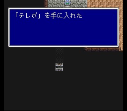
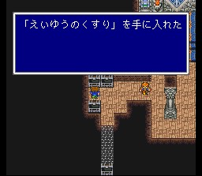
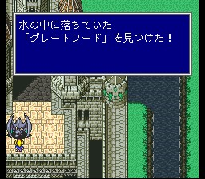
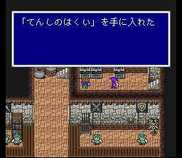
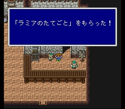

발 성
일행은 가라프의 성인 발 성에 도착합니다. 쿠루루는 비룡을 쉬게 하러 가고, 가라프가 발 성의 왕임이 밝혀집니다. 발 성은 상당히 볼 게 많은 성입니다. 돌아다니면서 아이템들을 챙깁시다. 탈출마법인 텔레포가 숨겨진 길에 있으니 반드시 얻으시고. 수로 쪽을 잘 조사해 보면 그레이트스워드가 나옵니다. 건물에 가려 잘 안 보이는 통로로 내려가면 상점으로 통하는 길이 있습니다. 여기서도 유용한 아이템들을 얻을 수 있습니다. 장사를 훼방놓아 보시길..
도구상: 하이포션, 포션, 피닉스의 꼬리깃, 금바늘, 여인의 키스, 요술방망이,
안약, 해독제, 에텔, 성수, 코테이지, 거인의 약, 힘의 약, 스피드드링크, 프로테스드링크,
영웅의 약
무기상: 오리하르콘, 워해머, 아슈라, 수면의 검, 윈드스피어, 어둠의
활, 꿈의 하프, 체인위프
방어구상: 골드실드, 골드헬름, 그린베레, 삼각모자,
골드아머, 시노비의 옷, 대지의 옷, 건틀렛
마법상, 백, 흑, 시공마법 레벨 4
이 성 지하는 유명한 레벨업 장소로, 경험치는 매우 적지만 한번 전투에 ABP를 4 혹은 8씩 주는데다가 레벨5데스로 모두 쓸어 버릴 수 있으므로 직업 노가다에 매우 적합합니다. 게다가 적은 확률이지만 이 녀석들은 트윈랜서를 가지고 있는데, 제2세계 최강의 무기라고 할 수 있습니다. 노가다를 오래 하면 몇 개 모을 수 있습니다. (증식은 조금 무리입니다. 오래 살려두면 석화공격을 해대서..)
성 꼭대기에 올라가면 비룡이 죽어가고 있습니다. 레나는 비룡초를 떠올리고, 일행은 비룡의 계곡으로 가서 비룡초를 구해오기로 합니다. 성은 마물의 침입에 대비하여 막혀 있는 상태이지만, 가라프는 일행이 나간 후에 성문을 곧바로 봉하도록 명령합니다. 성문 밖으로 나가면 아브덕터가 대적해 오는데 껌입니다. 사뿐히 즈려밟고 나갑시다.
필드상에서 북쪽으로 가면 케루브 마을이 있습니다. 비룡의 계곡으로 가려면
케루브를 지나야 합니다.
케루브 마을에 들어가기 전에, 근처에 출몰하는
골나고를 마수사의 어빌리티를 이용하여 잡아 둡시다. HP가 1/8이 되어야 하니 그라비데를
잘 쓰시길..